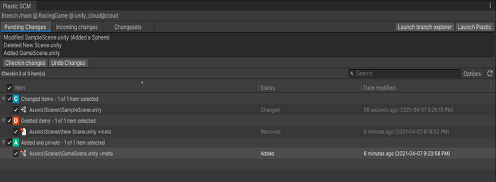
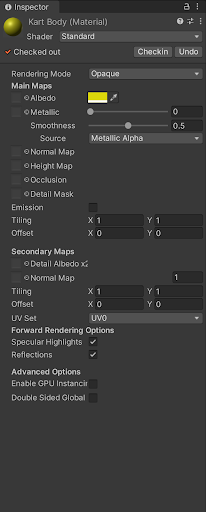
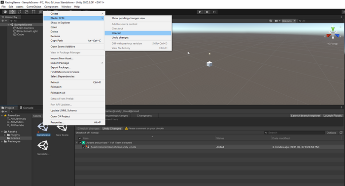
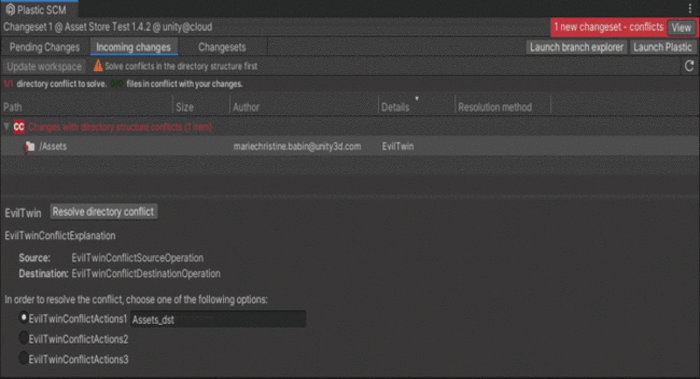
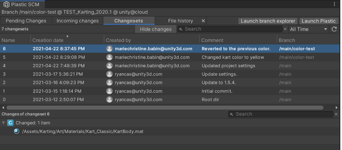
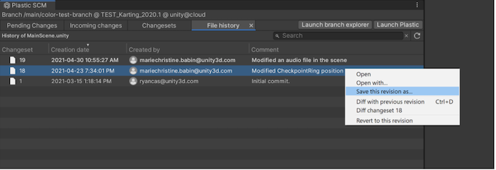
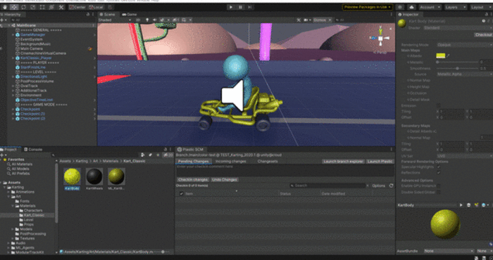

Overview of features¶
Pending Changes¶
The Pending Changes tab allows you to view all pending changes in your workspace. These changes are not checked into the repository. In this tab, you can select which files you want to check in, add a comment, and check in the changes.

Note : You can check in a specific file using the Plastic SCM contextual menu in the project view or the Checkin button in the Inspector window.

In the example below, the user adds a GameScene. They can check in the scene using the Pending Changes tab or the Checkin option in the contextual menu.

Incoming Changes¶
The Incoming Changes tab allows you to view all incoming changes and conflicts and update your local project. Any changes made to your project prompts an “Incoming changes” notification at the top right of the Plastic SCM window.
Tip : Check the Incoming Changes tab frequently to avoid facing future change conflicts in your team.

Project History¶
Use the Changesets tab to view all changes made to your project as they occur chronologically, along with who made the changes and when. You can sort by columns and alter the chronological view of the story.

Double-click any file in a changeset to go to the File History tab, and display every changeset. In the File History view, right-click on a change and click Save the revision as… to restore the file’s former state. This is useful if you had previously deleted some logic that you now need.

You can also view the changes made to a specific file in the Project view through a contextual menu, then revert to an earlier revision of the file.
